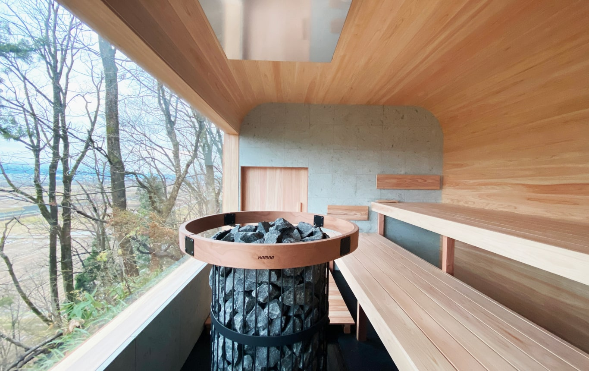
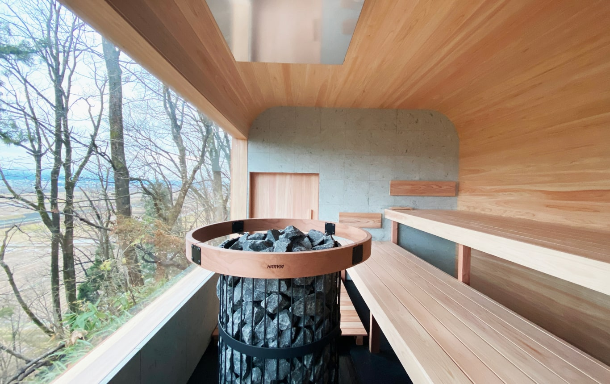

かけがえのない人と過ごす とっておきの時間を 何より大切にできる場所。

Concept
プライバシーが保たれた
1日1組のプライベートホテル。
優雅な「大切な人との時間」を
心ゆくまでお楽しみください。
大切な人との時間は、何よりも贅沢なもの。
「Re:fika」では、1日1組限定の完全プライベート空間をご用意し、“もう一度”深く繋がる体験をお届けします。煩わしい日常や、人目を気にすることから離れて、心から気の置ける大切な人と対話し、くつろぎ、思い出を重ねるひとときを。
スウェーデン語で「人との繋がりを大切にしながら、コーヒーを楽しむ時間」を意味する “Fika”。
ここではその精神を受け継ぎ、ホテルらしい格式ばったサービスではなく、まるで自宅のように肩の力を抜いて過ごせるホスピタリティを心がけています。
「また来たい」と思う場所は、日常の延長ではなく、それでいて不思議なくらい馴染む場所。Re:fikaは、そんなあたたかな“隠れ家”として、かけがえのない人との時間をゆっくり深めていただけるようお迎えいたします。
Service
特別な時間のための設備。
かけがえのない人との滞在を、より豊かに彩るために。Re:fikaでは、広々とした庭やドッグランをはじめ、自然を満喫できるBBQセットや夜空を楽しむためのアウトドア設備、プライベートサウナなど、多彩な施設をご用意しています。
一日をたっぷり使って外で遊ぶのもよし、夜は焚き火や星空を眺めながら語り合うのもよし。気ままにアクティビティを楽しみながら、お互いが一番リラックスできる時間を見つけていただきたい――そんな思いから誕生したのが、Re:fikaのサービススタイルです。
室内には、深い眠りへ誘う特別な寝具や、肌触りにこだわったタオルやアメニティを揃えました。くつろぎの空間でゆったりと身体を休め、豊かな自然の息吹に包まれながら心までほどけていく感覚を味わっていただけます。
自然の中で過ごすときに生まれる小さな発見や、家族や仲間との何気ない会話こそが本当の贅沢。どうぞ思う存分、Re:fikaならではの上質なくつろぎをお楽しみください。

 

Architecture
ゆっくりと時間の流れを楽しむ空間。

そんな願いを形にするために選んだのは、大分県日田市・水の森に隣接する200坪の敷地。ここは、美しい湖のようなダムが広がる静謐な場所で、車や人通りはほとんどありません。自然の音だけが耳に届き、いつしか心がほどけていくのを感じることでしょう。
私たちが目指したのは、“自然に溶け込みながらも、滞在者が主役になれる”建築とデザイン。地形を活かすように設計された建物からは、水の森や広大な敷地を一望でき、四季折々の緑や水面の移ろいを眺めながら、ゆったりとした時間を過ごせます。大きな窓から差し込む柔らかな光は、室内を優しく照らし、遠くの山並みや森の景色を一枚の絵画のように切り取ります。モダンでありながら落ち着いた「居心地の良さ」を追求しました。
ここには、子どもとのびのび遊べる広大な庭や、愛犬と駆け回れるドッグラン、夜には焚き火を囲んでゆっくり語らうスペースも完備。さらに、プライベートサウナや屋外BBQ設備もご用意しています。一切の気兼ねなく、身体も心も解き放つことができる――それがRe:fikaの空間づくりです。
何気ないひとときこそが、思い出に色濃く残る。忙しい日常から離れて、自然の呼吸に合わせるように時を感じてみませんか。私たちの建物は、ただ「泊まる」だけのためではなく、「心身をととのえ、かけがえのない人との時間を取り戻す」ための舞台となるよう設計されています。どうぞここで、自分たちのペースでゆっくりと、流れる時間を味わってください。
Access
福岡から 車でわずか1時間。
都心部の喧騒を離れ、豊かな自然が広がる大分・日田の地へは、予想以上にスムーズにたどり着けます。高速道路を利用すれば、天神や博多など主要エリアからもあっという間。途中には地元グルメや歴史ある街並みなど、立ち寄りスポットも数多く点在しているので、ドライブそのものを楽しむことができます。
「ちょっと遠いかも…」というイメージがある大分県ですが、意外なほどアクセスしやすいロケーションが、Re:fikaの魅力のひとつ。福岡から気軽に出かけられる距離でありながら、深呼吸したくなる大自然がすぐ目の前に広がります。
どうぞ、ドライブの途中で感じる豊かな四季の風景とともに、「福岡からわずか1時間」で辿り着く別世界をお楽しみください。